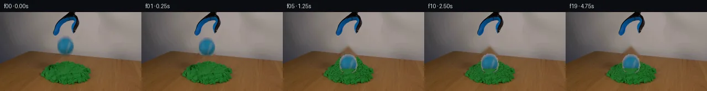

![首帧]()

Round 00
2026-11-04T20:43:57.058236+00:00像素候选变化代码 +234/−0inspection 更新
pixels 90efa384ba64be46 · code 884f4aedde78d91e
查看本轮 generate.py 真实 diff
--- previous/generate.py
+++ current/generate.py
@@ -0,0 +1,234 @@
+#!/usr/bin/env python3
+"""Generate the 20-frame locked-off ball/kinetic-sand demonstration.
+
+The source frame supplies every static pixel and the ball/sand textures. The
+only synthesized pixels are in the small interaction corridor.
+"""
+from pathlib import Path
+
+import cv2
+import numpy as np
+from PIL import Image, ImageDraw, ImageFont
+
+import artifact_io
+
+
+ROOT = Path(__file__).resolve().parent
+H, W = 144, 256
+
+
+def largest_component(mask: np.ndarray) -> np.ndarray:
+ n, labels, stats, _ = cv2.connectedComponentsWithStats(mask.astype(np.uint8), 8)
+ if n <= 1:
+ raise RuntimeError("empty segmentation")
+ index = 1 + int(np.argmax(stats[1:, cv2.CC_STAT_AREA]))
+ return labels == index
+
+
+def alpha_over(dst: np.ndarray, rgb: np.ndarray, alpha: np.ndarray) -> np.ndarray:
+ """Straight-alpha composite, with arrays at full-frame resolution."""
+ a = np.clip(alpha, 0.0, 1.0)[..., None].astype(np.float32)
+ out = dst.astype(np.float32) * (1.0 - a) + rgb.astype(np.float32) * a
+ return np.clip(np.rint(out), 0, 255).astype(np.uint8)
+
+
+def soft_polygon(points, blur=0.45) -> np.ndarray:
+ mask = np.zeros((H, W), np.uint8)
+ cv2.fillPoly(mask, [np.rint(points).astype(np.int32)], 255, lineType=cv2.LINE_AA)
+ result = mask.astype(np.float32) / 255.0
+ if blur:
+ result = cv2.GaussianBlur(result, (0, 0), blur)
+ return np.clip(result, 0, 1)
+
+
+def textured_sand(source: np.ndarray, sand_mask: np.ndarray) -> np.ndarray:
+ """A deterministic texture made only from measured source sand pixels."""
+ ys, xs = np.where(sand_mask)
+ colors = source[ys, xs]
+ yy, xx = np.indices((H, W))
+ # The relatively prime coefficients prevent visible repeating columns.
+ idx = (xx * 197 + yy * 89 + xx * yy * 3) % len(colors)
+ tex = colors[idx].copy()
+ # Preserve the pile's gentle top-to-bottom darkening without inventing hue.
+ factor = np.clip(1.035 - 0.0020 * (yy - 85), 0.93, 1.05)[..., None]
+ return np.clip(np.rint(tex.astype(np.float32) * factor), 0, 255).astype(np.uint8)
+
+
+def displaced_shoulders(frame: np.ndarray, texture: np.ndarray, strength: float) -> np.ndarray:
+ """Build compacted, asymmetric lips from original green-sand texture."""
+ if strength <= 0:
+ return frame
+ s = float(strength)
+ left = np.array([
+ [80, 111], [86, 103], [92, 98], [98, 96 - 8*s],
+ [104, 96 - 15*s], [109, 99 - 9*s], [112, 110], [106, 120], [89, 119]
+ ])
+ right = np.array([
+ [126, 109], [129, 98 - 8*s], [134, 95 - 14*s], [141, 96 - 8*s],
+ [149, 102], [158, 111], [153, 120], [134, 120]
+ ])
+ # The two sides compact differently, as real kinetic sand does.
+ ml = soft_polygon(left, 0.5) * min(1.0, 0.45 + 0.70*s)
+ mr = soft_polygon(right, 0.5) * min(1.0, 0.42 + 0.68*s)
+ out = alpha_over(frame, texture, ml)
+ out = alpha_over(out, np.clip(texture.astype(np.int16) - np.array([3, 1, 3]), 0, 255).astype(np.uint8), mr)
+ return out
+
+
+def add_contact_shadow(frame: np.ndarray, source_sand_mask: np.ndarray, amount: float, rx: float) -> np.ndarray:
+ if amount <= 0:
+ return frame
+ yy, xx = np.indices((H, W))
+ # Shadow follows the original crest and is restricted to measured sand.
+ d = ((xx - 118.0) / rx) ** 2 + ((yy - 94.0) / 4.2) ** 2
+ alpha = np.exp(-2.1 * d) * float(amount) * source_sand_mask
+ shaded = np.clip(frame.astype(np.float32) * np.array([0.66, 0.70, 0.68]), 0, 255).astype(np.uint8)
+ return alpha_over(frame, shaded, alpha)
+
… diff truncated; 147 more lines …